PM-FEAT-00070 · pos_next · hướng A (dùng giữ tồn có sẵn của ERPNext, chốt 02/10/2026). Ảnh chụp từ POS Next đang chạy, quầy POS Chiềng Sại, tồn kho thật (Chả cá 258 gói, Chả Tôm 97 gói, Colgate 100). Phần mới được chèn tạm vào màn hình để xem trước, chưa có dòng code nào. Các đơn giữ trong danh sách là dữ liệu ví dụ. Bấm vào ảnh để phóng to.
1. Giữ hàng nằm ở đâu
Hai chỗ trên POS và một mục cấu hình trên desk.
A
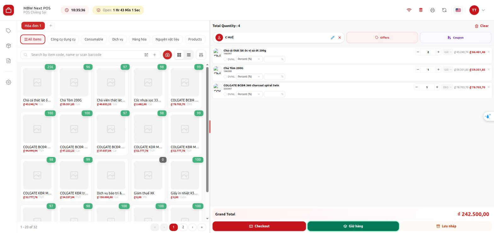
Nút Giữ hàng cạnh Checkout, dùng khi giỏ có khách và hàng. Nút Hold cũ đổi tên thành Lưu nháp (xem mục 4.1).B
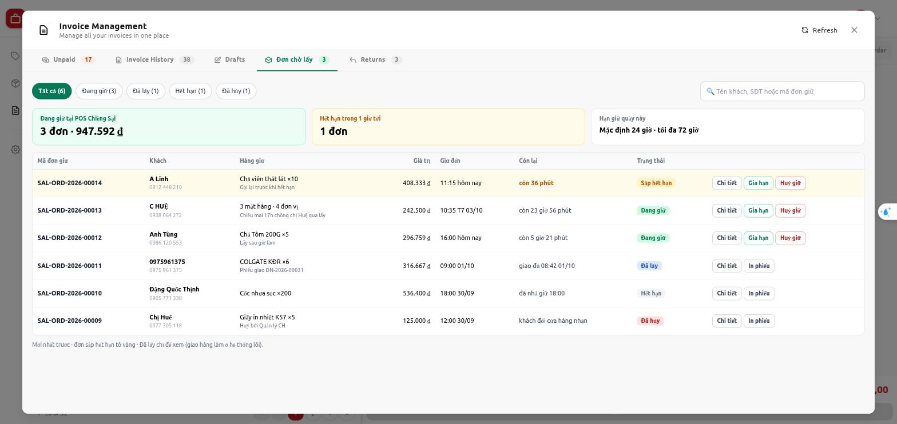
Tab Đơn chờ lấy trong màn quản lý hoá đơn: xem, gia hạn, huỷ giữ.C
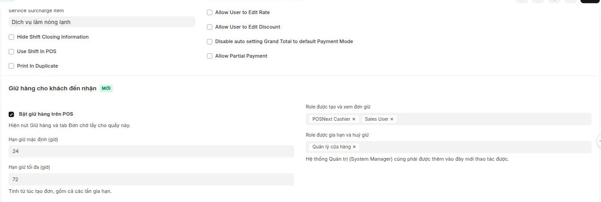
Mục Giữ hàng cho khách đến nhận trên POS Profile (desk): bật/tắt, hạn giữ, role.
2. Từng bước tạo đơn giữ
Ví dụ: chị Huệ gọi điện đặt 2 gói chả cá, 1 gói chả tôm, 1 Colgate, chiều mai chồng chị qua lấy.
1Chọn khách (bắt buộc), thêm hàng như bán thường, bấm Giữ hàng.2
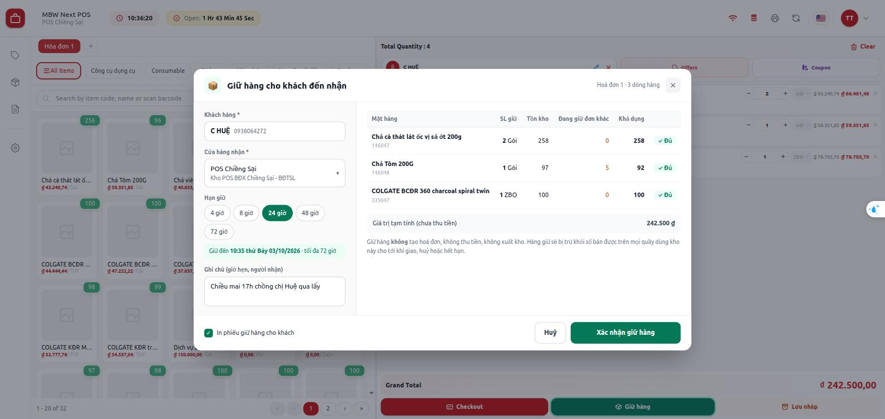
Kiểm cửa hàng nhận, chọn hạn giữ (mặc định 24 giờ), ghi giờ hẹn. Mỗi dòng hiện tồn kho, phần đang giữ cho đơn khác và số khả dụng.3
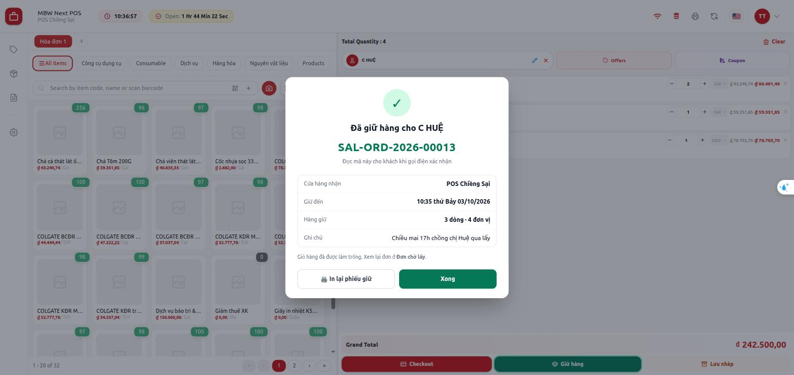
Xác nhận → tạo đơn giữ, hiện mã đơn để đọc cho khách, giỏ làm trống. (Ảnh chụp đè lên giỏ chưa làm trống.)4
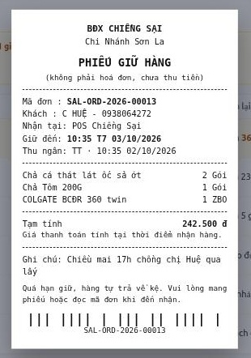
In phiếu giữ khổ nhiệt 80mm, ghi rõ không phải hoá đơn, chưa thu tiền. In lại được từ tab Đơn chờ lấy.
3. Hiện tại → Đề xuất
3.1 Nút dưới giỏ hàng
Hiện POS chỉ có nút Hold. Nút này lưu nháp vào máy đang dùng, không giữ tồn, quầy khác không thấy.
HIỆN TẠI
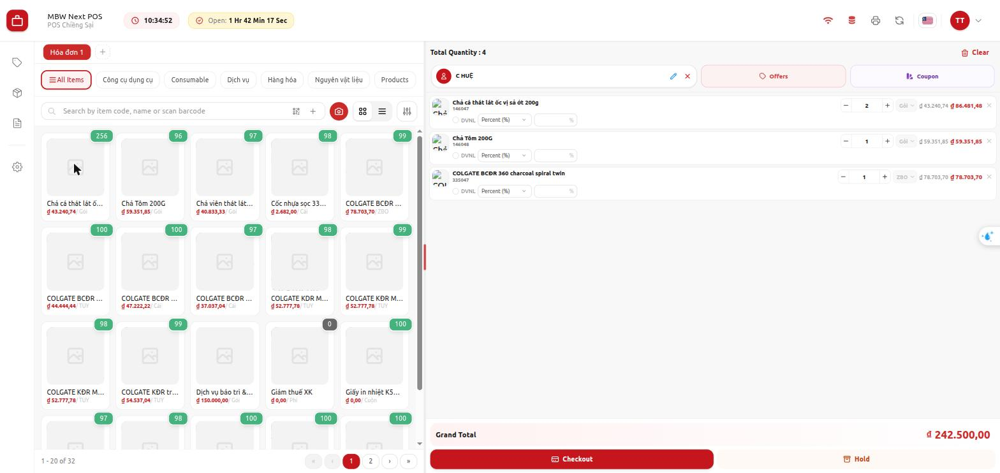
Checkout + Hold. Bản tiếng Việt dịch Hold là “Giữ”, nên dễ nhầm với giữ hàng.ĐỀ XUẤTCheckout · Giữ hàng (mới) · Lưu nháp (Hold cũ, giữ nguyên chức năng).
3.2 Số tồn trên lưới hàng
Mọi quầy dùng kho Chiềng Sại phải thấy số đã trừ hàng đang giữ, để không bán mất hàng của khách.
HIỆN TẠI
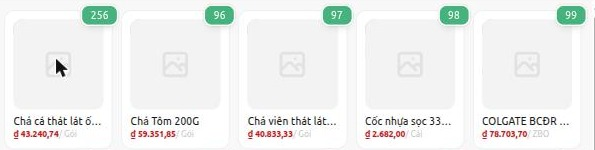
Chả Tôm hiện 96 = tồn 97 trừ 1 gói trong giỏ. Không biết gì về hàng đang giữ.ĐỀ XUẤT
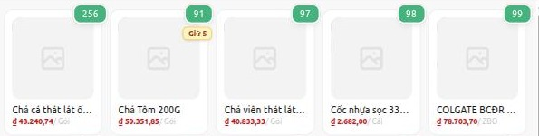
Chả Tôm hiện 91 = 97 − 5 đang giữ − 1 trong giỏ, kèm nhãn Giữ 5. Desk ERPNext cũng thấy số đã trừ phần giữ và cũng bị chặn bán vào phần này.
3.3 Không đủ hàng để giữ
Khách cần 100 gói Chả Tôm, kho còn 97 nhưng 5 gói đang giữ cho đơn khác.
ĐỀ XUẤT
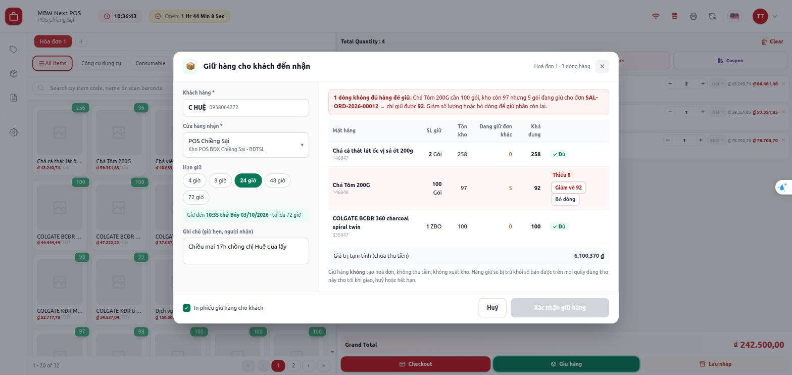
Dòng thiếu tô đỏ, báo rõ giữ được 92. Bấm Giảm về 92 hoặc Bỏ dòng; nút Xác nhận khoá tới khi hết dòng thiếu. Hai quầy cùng giữ món cuối thì người bấm sau nhận đúng thông báo này.
3.4 Màn quản lý hoá đơn
Đơn giữ nằm cạnh các tab đang có, thu ngân không phải học chỗ mới.
HIỆN TẠI
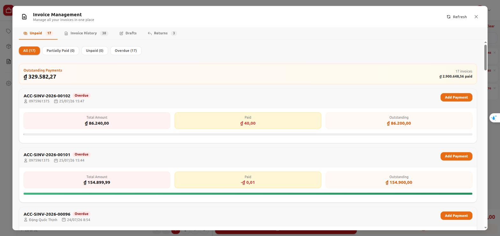
Unpaid · Invoice History · Drafts · Returns. Không có đơn giữ.ĐỀ XUẤTThêm tab Đơn chờ lấy: lọc theo trạng thái, tìm theo tên/SĐT/mã đơn; đơn sắp hết hạn tô vàng; tổng đang giữ của quầy.
3.5 Gia hạn và huỷ giữ
Chỉ role “được gia hạn và huỷ giữ” của quầy thấy hai nút này.
ĐỀ XUẤT
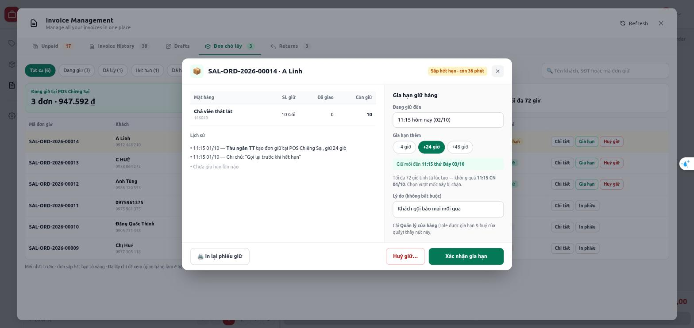
Chi tiết đơn + lịch sử thao tác. Gia hạn +4 / +24 / +48 giờ, không vượt 72 giờ tính từ lúc tạo.ĐỀ XUẤT
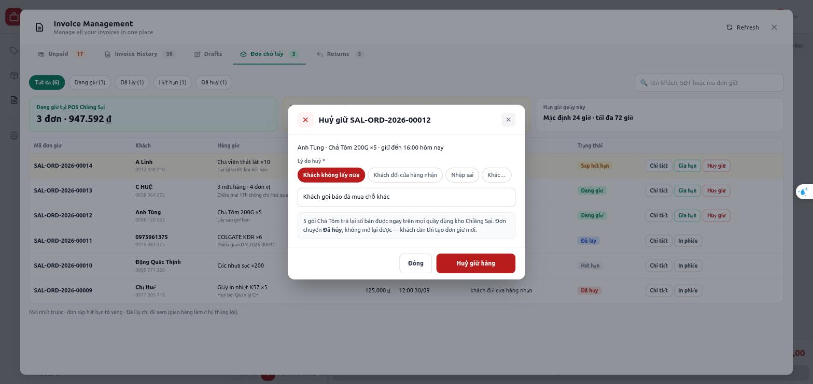
Huỷ giữ bắt buộc chọn lý do. Hàng trả lại số bán được ngay; đơn không mở lại được.
3.6 Cấu hình trên POS Profile (desk)
Bật riêng từng quầy, không có cờ chung toàn site.
HIỆN TẠI
Không có cấu hình giữ hàng.
ĐỀ XUẤTBật giữ hàng · hạn mặc định / tối đa (giờ) · role tạo và xem · role gia hạn và huỷ. System Manager cũng phải được thêm vào role mới thao tác được.
4. Phương án A / B (đã chốt)
4.1 Tên nút: Hold cũ và Giữ hàng mới — đã chốt A
Hai việc khác nhau: lưu nháp trên máy và giữ tồn cho khách.
ĐÃ CHỐT · ABa nút riêng: Checkout · Giữ hàng · Lưu nháp. Một chạm, không nhầm.PHƯƠNG ÁN B
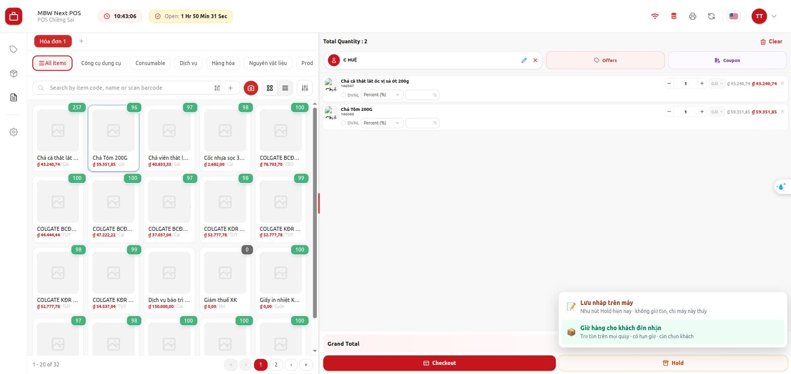
Giữ nút Hold, bấm vào mở menu chọn Lưu nháp hoặc Giữ hàng. Ít đổi giao diện nhưng thêm một chạm.
Chốt A (02/10): ba nút riêng, sửa bản dịch “Hold” thành “Lưu nháp”.
4.2 Bán vào phần hàng đang giữ — đã chốt: luôn chặn
Giỏ bán 95 gói Chả Tôm, kho 97, đang giữ 5 cho đơn khác. Với hướng A, ERPNext luôn chặn ở mọi kênh; POS chỉ báo rõ đơn nào đang giữ.
ĐÃ CHỐT · chặn
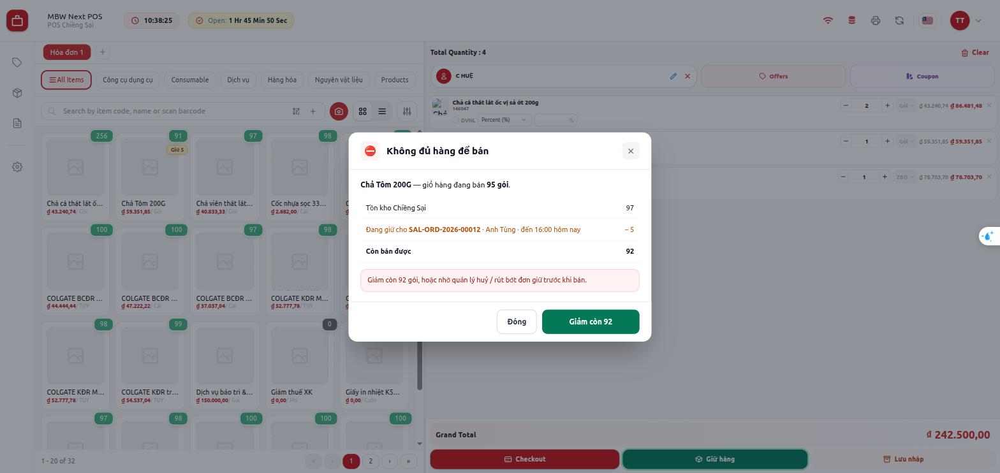
Chặn hẳn, chỉ bán được 92. Muốn bán hơn phải nhờ quản lý huỷ hoặc rút bớt đơn giữ.
Ngoại lệ: site hoặc mặt hàng bật “cho phép tồn âm” thì ERPNext bỏ qua kiểm tra hàng giữ — vì vậy không cho bật giữ hàng ở site đó (điểm 12).
5. Đã chốt và còn mở
#
Nội dung
Trạng thái
A
Hướng làm: dùng giữ tồn có sẵn của ERPNext (phải bật cho cả site; giữ ở mọi kênh)
Đã chốt 02/10
3
Chọn cửa hàng nhận khác: các quầy cùng công ty đã bật giữ hàng. Quầy A tạo, giữ ở kho quầy B, đơn hiện ở quầy B
Đã chốt
4–6
Hạn 24 / 72 giờ theo quầy · in phiếu theo cấu hình quầy · tạo nhanh khách mới
Đã chốt
8
Quá hạn là nhả ngay, không chờ job
Đã chốt
9
Đơn giữ từ POS bỏ qua Workflow
Đã chốt
1
Site bật tự sinh hoá đơn từ Sales Order: chỉ cảnh báo (không sửa app selling)
Đã chốt
3b
Quầy A xem lại đơn đã giữ hộ quầy B
Xem xét sau · đề xuất chỉ xem
7
Lấy một lần là hết: giao / lấy thiếu thì phần còn lại trả về kệ ngay
Đã chốt
8b
Nhãn “Hết hạn” tách khỏi “Đã hủy”
Đã chốt
10
Nút “Khách đến lấy”: kết thúc đơn giữ, đưa hàng vào giỏ, Checkout tại POS (xem bản bấm thử)
Đã chốt · làm đợt này
11
Đổi Hold thành “Lưu nháp” + thêm nút “Giữ hàng” (mục 4.1)
Đã chốt
12
Site cho phép tồn âm: giữ tồn không có tác dụng
Xem xét sau · đề xuất không cho bật
Chưa hỏi thủ kho / quản lý cửa hàng (người trực tiếp thao tác).
6. Các trạng thái bị chặn
6.1 Mất mạng
Giữ hàng phải kiểm tồn trực tiếp trên hệ thống.
ĐỀ XUẤT
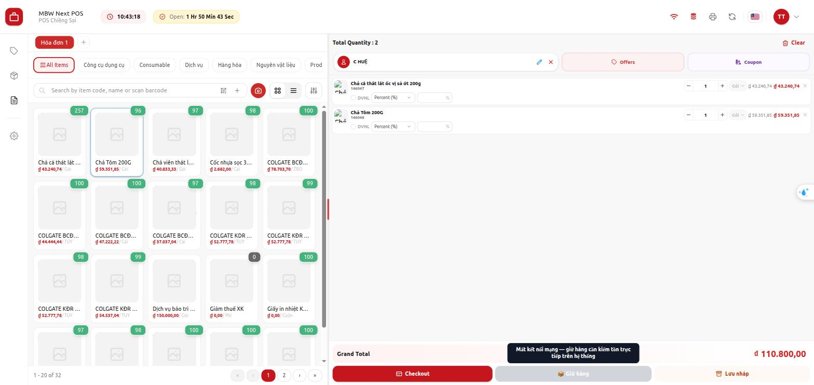
Nút Giữ hàng mờ, kèm lý do. Lưu nháp vẫn dùng được.
Tình huống
POS xử lý
Quầy chưa bật giữ hàng / người dùng không có role
Không hiện nút Giữ hàng, không hiện tab Đơn chờ lấy